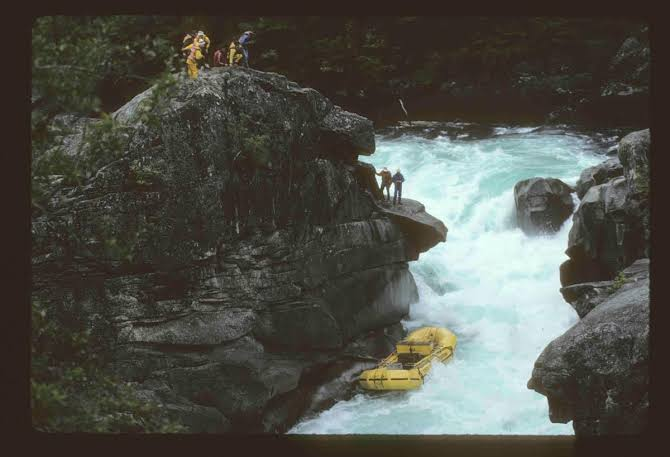

Experience thrilling rapids with expert guides and unforgettable views! Our team is dedicated to safety and excitement for all skill levels.

Experience thrilling rapids with expert guides and unforgettable views! Our team is dedicated to safety and excitement for all skill levels.
Dry Oar Rafting was founded to bring safe, fun, and exciting rafting adventures to everyone. Over the years, we have guided thousands of clients down beautiful rivers across the country.
